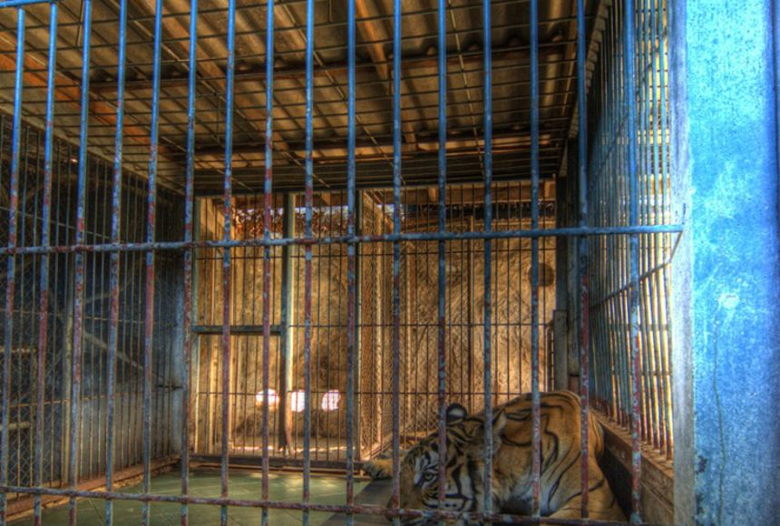

Welcome peeps
Zoos are places where wild animals are kept for public display. Zoos are often the sites of sophisticated breeding centers, where endangered species may be protected and studied. Some zoos, like this aquarium in Monterey, California, are dedicated to one species or set of species. (Aquariums are dedicated to the display of aquatic creatures.)
